%%{init: {"flowchart": {"wrappingWidth": 420}}}%%
flowchart LR
CP["Évolution phonétique"] --> AJ["<b>Ajout</b> d'un son"]
CP --> SU["<b>Suppression</b> d'un son<br><i>terme général : amuïssement</i>"]
CP --> CH["<b>Changement</b> d'un son"]
AJ --> AJ1["<b>prothèse</b> : au début du mot<br><b>épenthèse</b> : entre deux consonnes"]
SU --> SU1["<b>aphérèse</b> : au début du mot<br><b>syncope</b> : à l'intérieur du mot<br><b>apocope</b> : à la fin du mot<br><b>haplologie</b> : séquence doublée"]
CH --> CH1["le son change de place<br><b>métathèse</b>"]
CH --> CH2["une dimension du son change<br>le nom dit <b>ce que le son devient</b>"]
CH2 --> V["<b>voyelles</b><br>fermeture · ouverture<br>antériorisation · centralisation<br>nasalisation · dénasalisation<br>diphtongaison · monophtongaison<br>consonification · allongement compensatoire"]
CH2 --> C["<b>consonnes</b><br>palatalisation · dépalatalisation<br>vélarisation · uvularisation<br>affrication · désaffrication · assibilation<br>lénition : sonorisation, fricativisation<br>vocalisation · dégémination · rhotacisme"]
V --> VA["<b>assimilation</b><br>ex. nasalisation, monophtongaison"]
V --> VD["<b>dissimilation</b><br>ex. [ei] > [oi]"]
C --> CA["<b>assimilation</b><br>ex. palatalisation, lénition"]
C --> CD["<b>dissimilation</b><br>ex. [r]…[r] > [l]…[r]"]
Évolutions phonologiques
6.1 Rappel : les sons du français (API)
6.1.1 Les voyelles : quatre dimensions
| Dimension | Niveau | Voyelles du français |
|---|---|---|
| Aperture | fermée | [i] [y] [u] |
| mi-fermée | [e] [ø] [o] | |
| moyenne | [ə] | |
| mi-ouverte | [ɛ] [œ] [ɔ] [ɛ̃] [œ̃] [ɔ̃] | |
| ouverte | [a] [ɑ] [ɑ̃] | |
| Antériorité | antérieure | [i] [y] [e] [ø] [ɛ] [œ] [a] [ɛ̃] [œ̃] |
| centrale | [ə] | |
| postérieure | [u] [o] [ɔ] [ɑ] [ɔ̃] [ɑ̃] | |
| Arrondissement | non arrondie | [i] [e] [ɛ] [a] [ɑ] [ɛ̃] [ɑ̃] |
| arrondie | [y] [ø] [œ] [u] [o] [ɔ] [ə] [œ̃] [ɔ̃] | |
| Nasalité | orale | [i] [y] [u] [e] [ø] [o] [ə] [ɛ] [œ] [ɔ] [a] [ɑ] |
| nasale | [ɛ̃] [œ̃] [ɔ̃] [ɑ̃] |
6.1.2 Les voyelles orales du français
| antérieures non arrondies | antérieures arrondies | centrale | postérieures | |
|---|---|---|---|---|
| fermées | [i] | [y] | [u] | |
| mi-fermées | [e] | [ø] | [o] | |
| moyenne | [ə] | |||
| mi-ouvertes | [ɛ] | [œ] | [ɔ] | |
| ouvertes | [a] | [ɑ] |
- Les voyelles nasales [ɛ̃] [œ̃] [ɔ̃] [ɑ̃] ont la même place que [ɛ] [œ] [ɔ] [ɑ].
- Parmi les postérieures, [u] [o] [ɔ] sont arrondies, [ɑ] est non arrondie.
6.1.3 Les consonnes : trois dimensions
| Dimension | Niveau | Consonnes du français |
|---|---|---|
| Lieu d’articulation | bilabiale | [p] [b] [m] |
| labiodentale | [f] [v] | |
| dentale | [t] [d] [n] | |
| alvéolaire | [s] [z] [l] | |
| palatale | [ʃ] [ʒ] [ɲ] | |
| vélaire | [k] [ɡ] [ŋ] | |
| uvulaire | [ʁ] | |
| Mode d’articulation | occlusive | [p] [b] [t] [d] [k] [ɡ] |
| fricative | [f] [v] [s] [z] [ʃ] [ʒ] [ʁ] | |
| nasale | [m] [n] [ɲ] [ŋ] | |
| latérale | [l] | |
| Voisement | sourde | [p] [t] [k] [f] [s] [ʃ] |
| sonore | [b] [d] [ɡ] [v] [z] [ʒ] [m] [n] [ɲ] [ŋ] [l] [ʁ] |
6.1.4 Les consonnes du français
| bilabiale | labiodentale | dentale | alvéolaire | palatale | vélaire | uvulaire | |
|---|---|---|---|---|---|---|---|
| occlusive | [p] [b] | [t] [d] | [k] [ɡ] | ||||
| fricative | [f] [v] | [s] [z] | [ʃ] [ʒ] | [ʁ] | |||
| nasale | [m] | [n] | [ɲ] | [ŋ] | |||
| latérale | [l] |
- Dans une case à deux symboles : sourde à gauche, voisée à droite.
- Glides : [j] (palatale), [ɥ] (labio-palatale), [w] (labio-vélaire).
Les affriquées [ts] [dz] [tʃ] [dʒ] n’existent pas dans le système du français standard actuel, mais elles jouent un grand rôle dans l’histoire du français.
6.2 Introduction
- La phonétique est un des domaines sur lesquels opère le changement linguistique.
Ce qui change en évolution phonétique, c’est la prononciation d’un phonème ou d’un groupe de phonèmes avec pour conséquence une prononciation altérée du mot dans son intégralité.
| LATIN | FRANÇAIS MODERNE |
|---|---|
| mansionem | maison |
| casam | chez |
| vinum | vin |
6.2.1 Évolution phonétique
La prononciation des phonèmes et des mots n’évolue pas de manière individuelle, c.-à-d. les mots ne subissent pas des évolutions phonétiques idiosyncratiques qu’on ne retrouve pas ailleurs dans la même langue.
Des mots ayant une structure phonétique analogue ont tendance à évoluer de la même manière.
Cela nous permet d’établir des lois phonétiques, c.-à-d. des évolutions phonétiques qui se produisent dans les mêmes contextes phonétiques et sous les mêmes conditions.
6.2.1.1 Exemple : du latin aux langues romanes
| Latin | Français | Roumain | Sarde | Italien | Espagnol | Portugais |
|---|---|---|---|---|---|---|
| cupam | coupe | cupă | cuppa | coppa | copa | copa |
| capram | chèvre | capră | craba | capra | cabra | cabra |
| caballum | cheval | cal | caddu | cavallo | caballo | cavalo |
| mutare | muer | muta | mudare | mutare | mudar | mudar |
| videre | voir | vedea | bíere | vedere | ver | ver |
Grâce à des études comparatives systématiques du latin et des langues romanes, on a pu établir des lois phonétiques du latin aux langues romanes.
Ces lois se subdivisent en deux groupes :
Celles qui se manifestent dans (presque) toutes les langues romanes et qui se sont ainsi produites avant la diversification du latin, c.-à-d. en latin vulgaire.
Celles qui se manifestent dans une seule langue romane et qui se sont ainsi produites après la diversification du latin sur le territoire français, italien, espagnol, portugais, roumain, etc.
6.2.2 Trois facteurs à prendre en compte
6.2.2.1 La syllabe
La syllabe est cruciale dans l’évolution phonétique : les sons évoluent selon la structure de la syllabe dont ils font partie.
- Lorsque deux consonnes sont contiguës, ces deux consonnes sont réparties entre deux syllabes chaque fois que c’est possible.
- Seule exception: la séquence Occlusive + Trille ou Approximante n’est jamais séparée.
- Dans tous les autres cas, la syllabation française se fait de manière à ce que les syllabes soient ouvertes (c.-à-d. se terminent par une voyelle au noyau ou sans coda).
Les syllabes ouvertes se terminent par une voyelle. Structurellement, une syllabe est ouverte si elle présente :
Le schéma \((C/G) + V\) : ta-bleau, bien
Le schéma \((C/G) + V\) devant \(C_{occlusive/fricative} + [ʁ]/[l] (+ V)\) : pé-tri-fi-ca-tion, dou-ble
La voyelle d’une syllabe ouverte est une voyelle libre.
Les syllabes fermées se terminent par une consonne. Structurellement, une syllabe est fermée si la voyelle centrale est suivie de deux consonnes (sauf la séquence \(C_{occlusive/fricative} + [ʁ]\) ou \([l]\)) ou d’une consonne en fin de mot : par-tie, four-chette.
La voyelle d’une syllabe fermée est une voyelle entravée.
6.2.2.2 L’accent tonique et l’accentuation latine
- Par exemple : les voyelles toniques se maintiennent mieux que les voyelles atones (sous forme altérée ou non).
- Longue : toute syllabe fermée (AR-GEN-TUM), et toute syllabe ouverte qui contient une diphtongue ou une voyelle longue (PA-RAU-LO, CAN-TĀ-RE).
- Brève : toute syllabe ouverte qui contient une voyelle brève (FA-CĔ-RE).
- Consonne + r ne fait pas entrave : PA-TREM.
- Découper en syllabes ; une diphtongue forme une seule syllabe (CÁU-SA > chose).
- Numéroter depuis la fin (3-2-1) : l’accent est sur 2 si elle est longue, sinon sur 3.
- Si 2 est ouverte, trouver la quantité de sa voyelle :
- par la morphologie : -āre, -īre, -ātus, -tātem sont longs (VE-NĪ́-RE > venir) ;
- par l’hiatus : une voyelle devant une autre voyelle est brève (GÁU-DĬ-A > joie) ;
- par l’ancien français : l’accent y est sur la dernière syllabe (e muet exclu) et reste sur la même syllabe qu’en latin (DE-BḖ-RE > devoir, WĪ́-WĔ-RE > vivre).
| Signe | Placé au-dessus d’une voyelle, il indique… | Exemple |
|---|---|---|
| le macron ( ¯ ) ou l’apex antique | que la voyelle est longue | ā, ē |
| la brève ( ˘ ) | que la voyelle est brève | ă |
| l’accent aigu | la syllabe tonique (dans certaines grammaires modernes) | amántem |
| LATIN CLASSIQUE | FRANÇAIS MODERNE |
|---|---|
| sēcūrum[sekurum] | sûr[syʁ] |
| căballum[kabalum] | cheval[ʃəval] |
| mūrum[murum] | mur[myʁ] |
6.2.2.2.0.1 Types de mots selon la syllabe tonique
Mots oxytons : des mots accentués sur la dernière syllabe.
- ca.fé, ta.bleau, stra.té.gie
Mots paroxytons : des mots accentués sur la pénultième syllabe (par ex. en latin).
- pe.dem (‘pied’), ar.mum (‘arme’)
Mots proparoxytons : des mots accentués sur l’antépénultième syllabe.
- a.ni.ma (‘âme’)
Mots clitiques : des mots non accentués (par ex. en français).
- Le, mon, ce, il, à, de
6.2.2.3 La position relative des segments
6.2.2.3.1 Les syllabes
- Par exemple : les voyelles atones initiales se maintiennent mieux que les voyelles atones finales (sous forme altérée ou non).
| LATIN CLASSIQUE | FRANÇAIS MODERNE |
|---|---|
| murum[murum] | mur[myʁ] |
| caballum[kabalum] | cheval[ʃəval] |
| securum[sekurum] | sûr[syʁ] |
latin dormitorium (‘dortoir’)
| dor | mi | to | ri | um |
|---|---|---|---|---|
| initiale | prétonique interne | tonique | posttonique interne | finale |
Les mots toniques contiennent en principe une seule voyelle tonique. Seuls les mots longs en ont parfois deux, l’une portant l’accent primaire et l’autre l’accent secondaire.
En français, accent secondaire (optionnel) sur les mots de contenu : alternance de syllabes fortes et de syllabes faibles.
- pastrami /ˌpa.stʀa.ˈmi/
- conjugaison /kɔ̃.ˌʒy.gɛ.ˈzɔ̃/
- confident /ˌkɔ̃.fi.ˈdɑ̃/ 4s. capital /ˌka.pi.ˈtal/
- capitaliste /ka.ˌpi.ta.ˈlist.ə/
néonatalogie
6.2.2.3.2 Voyelles contiguës
Si deux voyelles se succèdent, elles peuvent :
Être séparées par une coupe syllabique et constituer deux syllabes individuelles ; les deux voyelles sont en position de « hiatus ».
- latin hodie [hodie] (‘aujourd’hui’)
- latin fui [fui] (‘j’ai été’)
- français nuage [nyaʒ]
Appartenir à la même syllabe, pour former une diphtongue ; une des deux voyelles évolue vers un glide ; selon la position du glide, on distingue des diphtongues :
Les diphtongues s’appuient sur le phénomène de synérèse, qui se définit comme la fusion de deux voyelles contiguës en une seule syllabe.
Le français moderne ne connaît pas de diphtongues, contrairement à l’ancien français.
6.2.2.3.3 Position des consonnes
La position des consonnes à l’intérieur du mot est cruciale pour leur évolution phonétique.
Il y a trois types de consonnes selon leur position dans le mot :
- initiale
- intervocalique
- finale
6.3 Typologie d’évolutions phonétiques
Le changement phonétique est régulier s’il se produit dans tous les contextes qui conditionnent le changement phonétique dans la même aire linguistique.
| LATIN CLASSIQUE | FRANÇAIS MODERNE | Changement additionnel |
|---|---|---|
| datum | > dé | \([a] > [e]\) |
| pratum | > pré | amuïssement du \([t]\), \([u]\) et \([m]\) |
| natum | > né | réduction syllabique |
| LATIN CLASSIQUE | FRANÇAIS MODERNE | BILAN |
|---|---|---|
| centum | > cent | |
| cervum | > cerf | |
| ceram | > cire | |
| circulum | > cercle | |
| cinerem | > cendre | \([k] > [s]\) devant \([e]\) ou \([i]\) |
| LATIN CLASSIQUE | FRANÇAIS MODERNE | BILAN |
|---|---|---|
| campum | > champ | |
| cantare | > chanter | |
| capram | > chèvre | \([k] > [ʃ]\) devant \([a]\) |
| LATIN CLASSIQUE | FRANÇAIS | BILAN |
|---|---|---|
| carum | > cher | |
| carrum | > char | \([r] > [ʁ]\) |
| ESPAGNOL | BILAN |
|---|---|
| caro | \([r] > [ɾ]\) |
| carro | \([r] > [r]\) |
6.3.1 Deux changements phonétiques généraux
6.3.2 Assimilation
Un son devient similaire à un autre son qui se trouve d’habitude dans le contexte phonétique adjacent.
| LATIN CLASSIQUE | ITALIEN | BILAN |
|---|---|---|
| octo | > otto | |
| noctem | > notte | |
| factum | > fatto | \([k] > [t]\) |
6.3.2.1 Trois types d’assimilation
Totale vs partielle :
latin octo > italien otto
je sais pas > j’sais pas
Par contact vs par distance :
latin octo > italien otto
allemand eine Nacht vs zwei Nächte [naxt] vs [nɛçtə]
Progressive vs régressive (c.-à-d. anticipatoire) :
français cheveu [ʃəvø] prononciation lente vs [ʃfø] prononciation rapide
latin octo > italien otto
allemand eine Nacht vs zwei Nächte
6.3.3 Dissimilation
Un son se différencie d’un autre son, celui-ci pouvant être à une certaine distance phonétique.
| LATIN CLASSIQUE | FRANÇAIS | ITALIEN | ESPAGNOL | ANGLAIS |
|---|---|---|---|---|
| peregrinus | > pèlerin | pellegrino | peregrino | pilgrim |
| arbor | > arbre | árbol |
- La dissimilation est un changement plus occasionnel que l’assimilation.
6.3.4 Changements phonétiques spécifiques
Trois cas : on ajoute un son, on supprime un son, ou un son change.
6.3.5 Ajout d’un son
6.3.5.1 Prothèse
| LATIN CLASSIQUE | FRANÇAIS | ESPAGNOL |
|---|---|---|
| scholam | > école | escuela |
| stellam | > étoile | estrella |
| stabulam | > étable | establo |
| spinam | > épine | espina |
Ajout d’un son au début d’un mot.
La prothèse entraîne un accroissement syllabique.
Voyelle ajoutée : voyelle « prothétique ».
6.3.5.2 Épenthèse
| LATIN CLASSIQUE | FRANÇAIS |
|---|---|
| numerum | > nombre |
| cameram | > chambre |
| cumulum | > comble |
| essere | > a.français estre > françaismoderne être |
- Ajout d’une consonne entre deux autres consonnes, afin de faciliter la prononciation.
- Pas d’accroissement syllabique.
6.3.6 Suppression d’un son
6.3.6.1 Aphérèse
| LATIN CLASSIQUE | FRANÇAIS MODERNE | ESPAGNOL |
|---|---|---|
| apothecam (‘magasin de vins’) | > bodega | |
| Antoine > Toine |
- Suppression d’un son, d’habitude une voyelle, au début d’un mot.
- L’aphérèse entraîne une réduction syllabique.
6.3.6.2 Syncope
| LATIN CLASSIQUE | FRANÇAIS | ESPAGNOL | ITALIEN |
|---|---|---|---|
| populum | > peuple | pueblo | popolo |
| calidum | > chaud | cálido | caldo |
| viridem | > vert | verde | verde |
Suppression d’un son, typiquement une voyelle, à l’intérieur d’un mot.
La voyelle syncopée est atone et soit prétonique, soit posttonique.
La syncope entraîne une réduction syllabique.
Une consonne peut également être syncopée : français nordman > normand
6.3.6.3 Apocope
| LATIN CLASSIQUE | FRANÇAIS | ESPAGNOL | ITALIEN |
|---|---|---|---|
| panem | > pain | pan | pane |
| petram | > pierre | piedra | pietra |
| bonum | > bon | bueno | buono |
Suppression d’un son, à la fin d’un mot.
L’apocope est particulièrement fréquente dans le passage du latin au français.
L’apocope entraîne une réduction syllabique.
6.3.6.4 Haplologie
Simplification d’une séquence phonétique doublée ou proche.
FRANÇAIS :
mysticicisme > mysticisme
pacificisme > pacifisme
Qu’est-ce tu fais ?
ANGLAIS :
- Anglaland > England
L’haplologie entraîne une réduction syllabique.
6.3.7 Modification d’un son
6.3.7.2 Métathèse
| LATIN CLASSIQUE | ESPAGNOL | FRANÇAIS | ITALIEN | ANGLAIS |
|---|---|---|---|---|
| parabolam | > palabra | |||
| berbicem | > brebis | berbice | ||
| crocodilus/cocodrilus | > cocodrilo | a.français cocodrille > françaismoderne crocodile | coccodrillo | crocodile |
- Changement de place d’un son
6.3.7.3 Rhotacisme
| LATIN CLASSIQUE N.M.SG | LATIN CLASSIQUE GEN.M.SG |
|---|---|
| flos (‘fleur’) | > *flosis > floris |
| honos (‘honneur’) | > *honosis > honoris |
- Changement d’un phonème, très souvent un \([s]\), vers un \([r]\).
- Le rhotacisme est très rare dans l’évolution du (latin au) français, mais plus fréquent dans l’évolution du (indo-européen au) latin (par ex. infinitif : -ese/-ire > -ere/-ire).
6.3.7.4 Allongement compensatoire
| LATIN CLASSIQUE | FRANÇAIS |
|---|---|
| fenestram | > fenêtre |
| pastam | > pâte |
| essere | > a.français estre > françaismoderne être |
- Allongement d’une voyelle suite à l’amuïssement d’une consonne (compensation).
- En français moderne, l’allongement compensatoire est marqué par l’accent circonflexe.
6.3.7.5 Monophtongaison
LATIN CLASSIQUE > LATIN VULGAIRE
poenam [ɔj] > poenam [e]
caelum [aj] > caelum [ɛ]
causam [aw] > causam [ɔ]
Passage d’une diphtongue à une monophtongue.
| LATIN CLASSIQUE | FRANÇAIS | ESPAGNOL | ITALIEN |
|---|---|---|---|
| aurum [aw] | > or | oro | oro |
6.3.7.6 Diphtongaison
| LATIN CLASSIQUE | ANCIEN FRANÇAIS | FRANÇAIS MODERNE |
|---|---|---|
| florem | > flour (cf. angl.) | > fleur [eu] > fleur [œ] |
Passage d’une monophtongue à une diphtongue.
Les diphtongaisons affectent surtout les voyelles toniques et libres.
Les diphtongaisons sont très fréquentes dans le passage du latin au français.
6.3.7.6.1 Types de diphtongaisons du latin au français
1. Diphtongaison romane
| Latin | Français | Espagnol | Italien |
|---|---|---|---|
| pedem | pied | pie | piede |
| novum | neuf | nuevo | nuovo |
Chronologie : \(3^e-4^e\) s.
Portée : le territoire roman
Voyelles affectées : [ɔ] et [ɛ]
2. Diphtongaison française
Chronologie : \(6^e\) s.
Portée : le territoire gaulois
Voyelles affectées : [e], [o] et [a]
- Le sort du \([e]\) : \([e] > [ei]\) au \(6^e\) s. \(> [oi]\) au milieu du \(12^e\) s. \(> [ue]\) à la fin du \(12^e\) s. \(> [wɛ]\) ou \([wa]\) au \(13^e\) s. :
| LATIN CLASSIQUE | FRANÇAIS | BILAN |
|---|---|---|
| serum | > soir | \([e] > [wa]\) |
| telum | > toile | |
| tres | > trois |
- Le sort du \([a]\) : \([a] > [ae]\) au \(6^e\) s. \(> [æ]\) au \(7^e\) s. \(> [e]\) \(9^e\) s. (selon la loi de position) :
| LATIN CLASSIQUE | FRANÇAIS | BILAN |
|---|---|---|
| pratum | > pré | \([a] > [e]\) en syllabe ouverte |
| claritatem | > clarté | |
| amare | > aimer | |
| marem | > mer | \([a] > [ɛ]\) en syllabe fermée |
| patrem | > père | |
| salem | > sel |
- Le sort du \([o]\) : \([o] > [ou]\) au \(6^e\) s. \(> [eu]\) au \(11^e\) s. \(> [ø]\) au \(13^e\) s. (loi de position) :
| LATIN CLASSIQUE | FRANÇAIS | BILAN |
|---|---|---|
| nepotem | > neveu | \([o] > [ø]\) en syllabe ouverte |
| duos | > deux | |
| florem | > fleur | \([o] > [œ]\) en syllabe fermée |
| gulam | > gueule |
6.3.7.7 Lénition
Assimilation d’une consonne intervocalique sous forme d’une sonorisation, qui peut être suivie par une fricativisation et enfin un amuïssement (= sonorisation intervocalique) : tout mouvement vers le pôle [+sonore] dans l’échelle de sonorité :
[− sonore] occlusives › fricatives › nasales › liquides › glides › voyelles [+ sonore]
6.3.8 Résumé terminologique : les changements phonétiques
6.4 Synthèse terminologique
>: « devient », entre deux formes de mots (latin murum > français mur)→: « devient », dans la notation d’une loi phonétique (ə → ∅ / voyelle tonique ___)*devant une forme : forme reconstruite, non attestée (latin tabula > *tabla > français table)- /…/ : transcription phonologique · […] : transcription phonétique
6.4.1 La syllabe
| Terme | Définition |
|---|---|
| syllabe ouverte | syllabe qui se termine par une voyelle (ta-bleau) |
| syllabe fermée | syllabe qui se termine par une consonne (par-tie) |
| voyelle libre | voyelle d’une syllabe ouverte |
| voyelle entravée | voyelle d’une syllabe fermée |
| hiatus | deux voyelles qui se suivent et appartiennent à deux syllabes différentes (français nu-age) |
| diphtongue | deux voyelles qui se suivent dans la même syllabe, dont l’une est devenue un glide |
6.4.2 L’accent et la position
| Terme | Définition |
|---|---|
| voyelle tonique | voyelle qui porte l’accent |
| voyelle atone | voyelle qui ne porte pas l’accent |
| oxyton | mot dont l’accent est sur la dernière syllabe |
| paroxyton | mot dont l’accent est sur l’avant-dernière syllabe |
| proparoxyton | mot dont l’accent est sur l’antépénultième syllabe |
| clitique | mot sans accent propre (le, mon, il) |
Les cinq positions d’une syllabe dans le mot, latin dormitorium :
| dor | mi | to | ri | um |
|---|---|---|---|---|
| initiale | prétonique interne | tonique | posttonique interne | finale |
6.4.3 La loi phonétique
Évolution qui se produit de la même manière dans tous les mots qui présentent le même contexte phonétique, à la même époque et dans la même langue.
6.4.4 Noter une loi phonétique
A → B / C ___ D
« A devient B quand il se trouve après C et avant D. »
| Symbole | Sens |
|---|---|
| A | le son qui change |
| → | devient |
| B | le résultat du changement |
| / | « dans le contexte suivant » |
| ___ | la place du son qui change |
| C et D | ce qui précède et ce qui suit le son qui change (l’un des deux peut manquer) |
| ∅ | rien : A → ∅ = amuïssement · ∅ → B = ajout d’un son |
| # | frontière de mot : #___ = au début du mot · ___# = en fin de mot |
| V / C | n’importe quelle voyelle / n’importe quelle consonne |
Le symbole de l’amuïssement est ∅ (ensemble vide), et non ø : ø est une voyelle de l’API, celle de peu.
| Loi | Notation | Exemple |
|---|---|---|
| A | ə → ∅ / ___ voyelle tonique | a.français seür[səˈyr] > français sûr [syʁ] |
| B | ə → ∅ / voyelle tonique ___ | a.français vie[ˈviə] > français vie [vi] |
| C | ə → ∅ / voyelle atone ___ | français dévouement[devuəˈmɑ̃] > [devuˈmɑ̃] |
Comment lire la loi A : « ə devient rien (= s’amuït) quand il se trouve devant une voyelle tonique. »
6.4.5 Ajout d’un son
| Terme | Définition | Exemple |
|---|---|---|
| prothèse | ajout d’un son au début d’un mot | latin scholam > français école |
| épenthèse | ajout d’une consonne entre deux autres consonnes | latin cameram > français chambre |
6.4.6 Suppression d’un son
| Terme | Définition | Exemple |
|---|---|---|
| amuïssement | terme général : un son cesse d’être prononcé | a.français petit[pətit] > français petit [pəti] |
| aphérèse | suppression d’un son, d’habitude une voyelle, au début d’un mot | Antoine > Toine |
| syncope | suppression d’un son, typiquement une voyelle, à l’intérieur d’un mot | latin populum > français peuple |
| apocope | suppression d’un son, d’habitude une voyelle, à la fin d’un mot | latin panem > français pain |
| haplologie | simplification d’une séquence phonétique doublée ou proche | pacificisme > pacifisme |
6.4.7 Changement d’un son : la relation avec les sons voisins
| Terme | Définition | Exemple |
|---|---|---|
| assimilation | un son devient similaire à un autre son du contexte phonétique adjacent | latin factum > italien fatto |
| dissimilation | un son se différencie d’un autre son, qui peut être à une certaine distance | latin peregrinus > français pèlerin |
| métathèse | changement de position d’un son | latin berbicem > français brebis |
6.4.8 Changement d’un son : ce que le son devient
| Terme | Le son devient… | Exemple |
|---|---|---|
| palatalisation | plus palatal | latin campum[k] > français champ [ʃ] |
| affrication | une affriquée | français tu dis[ty di] > français québécois [tsy dzi] |
| nasalisation | nasal | latin vinum > français vin[vɛ̃] |
| rhotacisme | un[r] | latin *flosis > floris |
| allongement compensatoire | long, après l’amuïssement d’une consonne | latin pastam > français pâte |
| diphtongaison | une diphtongue | latin pedem > français pied |
| monophtongaison | une voyelle simple | latin aurum[aw] > français or [ɔ] |
6.4.9 Lénition (consonnes)
Évolution d’une consonne vers une articulation moins forte, surtout en position intervocalique. Elle se fait souvent par étapes : sonorisation, puis fricativisation, puis amuïssement.
| Terme | Le son devient… | Exemple |
|---|---|---|
| sonorisation | sonore | [t] > [d] : latin vita > a.français vide |
| fricativisation | une fricative | [b] > [β] > [v] |
| vocalisation | une voyelle ou un glide | [l] > [w] : latin alba > français aube |
| amuïssement | rien | latin vita > a.français vide > français vie |
6.5 Exercices (Boutier)
Quel changement touche le segment en gras ? Nommez-le avec les termes du cours.
Exercice 1 : lat. pastam > français pâte
Exercice 2 : lat. stellam > français étoile
Exercice 3 : lat. caballum > français cheval [ʃəval]
Exercice 4 : lat. berbicem > français brebis
Exercice 5 : lat. albam > français aube
Exercice 6 : lat. calidum > français chaud
Exercice 7 : lat. peregrinum > français pèlerin
Exercice 8 : lat. murum [u] > français mur [y]
Exercice 9 : lat. planam > français plaine [plɛn]
Exercice 10 : lat. numerum > français nombre
Exercice 11 : lat. aurum > français or
Exercice 12 : lat. campum [k] > français champ [ʃ]
Exercice 13 : lat. vitam > a.français vide
Exercice 14 : français pacificisme > pacifisme
Exercice 15 : lat. pedem > français pied
6.5.1 Exercice 1
Quel changement touche le segment souligné ? Nommez-le avec les termes du cours.
- lat. pastam > français pâte
Allongement compensatoire
Le [s] devant consonne s’amuït et la voyelle précédente s’allonge ; l’accent circonflexe en garde la trace.
V + [s] → [Vː] / ___ C
Source de l’exemple : Diapo Allongement compensatoire (pastam > pâte) ; HistoLF, fiche 18.
6.5.2 Exercice 2
Quel changement touche le segment souligné ? Nommez-le avec les termes du cours.
- lat. stellam > français étoile
Prothèse
Ajout d’un son au début du mot, devant le groupe s + consonne.
∅ → [e] / # ___ [s]C
Source de l’exemple : Diapo Prothèse.
6.5.3 Exercice 3
Quel changement touche le segment souligné ? Nommez-le avec les termes du cours.
- lat. caballum > français cheval [ʃəval]
Centralisation
Le [a] initial devient [ə] : le son devient plus central.
[a] → [ə] / # Cpalatale ___
Source de l’exemple : Tableau Voyelles : où et comment ? ; HistoLF, fiche 21.
6.5.4 Exercice 4
Quel changement touche le segment souligné ? Nommez-le avec les termes du cours.
- lat. berbicem > français brebis
Métathèse
Changement de position d’un son : le [r] passe devant la voyelle.
[e r] → [r e] / # C ___
Source de l’exemple : Diapo Métathèse.
6.5.5 Exercice 5
Quel changement touche le segment souligné ? Nommez-le avec les termes du cours.
- lat. albam > français aube
Vocalisation
Le [l] devant consonne devient [w] (puis se fond avec la voyelle) : une consonne devient un glide.
[l] → [w] / V ___ C
6.5.6 Exercice 6
Quel changement touche le segment souligné ? Nommez-le avec les termes du cours.
- lat. calidum > français chaud
Syncope
Suppression de la voyelle atone à l’intérieur du mot.
V → ∅ / V́C ___ CV (posttonique interne)
Source de l’exemple : Diapo Syncope.
6.5.7 Exercice 7
Quel changement touche le segment souligné ? Nommez-le avec les termes du cours.
- lat. peregrinum > français pèlerin
Dissimilation
Deux [r] dans le même mot : le premier se différencie et devient [l].
[r] → [l] / ___ … [r]
Source de l’exemple : Diapo Dissimilation.
6.5.8 Exercice 8
Quel changement touche le segment souligné ? Nommez-le avec les termes du cours.
- lat. murum [u] > français mur [y]
Antériorisation
Le [u] postérieur devient [y] antérieur : le son devient plus antérieur.
[u] → [y] (changement non conditionné)
Source de l’exemple : Tableau Voyelles : où et comment ?.
6.5.9 Exercice 9
Quel changement touche le segment souligné ? Nommez-le avec les termes du cours.
- lat. planam > français plaine [plɛn]
Dénasalisation
La voyelle, nasalisée devant [n], redevient orale parce que le [n] est suivi d’une voyelle (syllabe ouverte).
voyelle nasale → voyelle orale / ___ N
6.5.10 Exercice 10
Quel changement touche le segment souligné ? Nommez-le avec les termes du cours.
- lat. numerum > français nombre
Épenthèse
Ajout d’une consonne [b] entre deux consonnes ([m] et [r]) après la syncope.
∅ → [b] / [m] ___ [r]
Source de l’exemple : Diapo Épenthèse.
6.5.11 Exercice 11
Quel changement touche le segment souligné ? Nommez-le avec les termes du cours.
- lat. aurum > français or
Monophtongaison
La diphtongue [aw] devient une voyelle simple.
[aw] → [ɔ]
Source de l’exemple : Diapo Monophtongaison.
6.5.12 Exercice 12
Quel changement touche le segment souligné ? Nommez-le avec les termes du cours.
- lat. campum [k] > français champ [ʃ]
Palatalisation
Le [k] devant [a] devient plus palatal.
[k] → [tʃ] / ___ [a] (puis [tʃ] → [ʃ] : désaffrication)
Source de l’exemple : Tableau Consonnes : lieu et mode d’articulation.
6.5.13 Exercice 13
Quel changement touche le segment souligné ? Nommez-le avec les termes du cours.
- lat. vitam > a.français vide
Sonorisation
Le [t] intervocalique devient voisé : [t] > [d].
[t] → [d] / V ___ V
Source de l’exemple : Tableau Consonnes : force, voisement et statut.
6.5.14 Exercice 14
Quel changement touche le segment souligné ? Nommez-le avec les termes du cours.
- français pacificisme > pacifisme
Haplologie
Simplification d’une séquence phonétique doublée.
Source de l’exemple : Diapo Haplologie.
6.5.15 Exercice 15
Quel changement touche le segment souligné ? Nommez-le avec les termes du cours.
- lat. pedem > français pied
Diphtongaison
Le [ɛ] tonique libre devient une diphtongue [jɛ].
[ɛ] → [ie] / tonique, syllabe ouverte
6.5.16 Exercice de dépassement
Compléter l’évolution depáne > pɛ̃
Évolution détaillée
- > páane
- > páɛne (6e s.) – diphtongaison de [a] tonique libre
- > … (7e s.) – amuïssement de la voyelle finale ; fermeture du second élément de la diphtongue
- > … (11e s.) – …
- > … (12e s.) – fermeture du premier élément de la diphtongue
- > … (16e s.) – monophtongaison de la diphtongue
- > … (16e-17e s.) – amuïssement de la consonne nasale finale
Latin vulgaire páne · français moderne pɛ̃ · syllabes <pá><ne>
páne > páane > páɛne (6e s.) > páin (7e s.) > pãĩn (11e s. : nasalisation de la diphtongue devant N) > pẽĩn (12e s.) > pẽn (16e s.) > pɛ̃ (16e-17e s.)
6.6 Les changements dans l’histoire du français
6.6.1 Mode d’emploi
Pour chaque étape de l’histoire :
- Observez les données.
- Proposez le nom du changement (avec les termes de la première partie).
- Indice ➜ le contexte du changement s’affiche.
- Réponse ➜ le nom et la règle s’affichent.
Les règles sont notées A → B / C ___ D : A devient B entre C et D.
6.6.2 2e s. av. J.-C.
Quel changement ?
| latin | latin tardif | ancien français | français moderne |
|---|---|---|---|
| folia | l.j | fueille | feuille |
| vīnea | n.j | vigne | |
| vidua | d.w | veuve | |
| coāg(u)lāre | k.w | caillier | cailler |
| latin | latin tardif | ancien français | français moderne |
|---|---|---|---|
| facia | k.j | face | |
| ārea | r.j | aire | |
| annuāle | n.w | anvel | annuel |
- cfr foglio, vigna, vedova, cagliare, faccia, aria, annuale
/ en hiatus
Consonification latine
- i, e (voyelles antérieures) → [j] (glide palatale) / en hiatus
- u, o (voyelles postérieures) → [w] (glide labio-vélaire) / en hiatus
- a ne subit pas cet effet
6.6.3 1er s. ap. J.-C.
Quel changement ?
- k → /ʦ/ / {#, C} ___ i, e
- k → /jʣ/ / V ___ i, e
- g → /ʤ/ / {#, C} ___ i, e
- g → géminé /jj/ / V ___ i, e
Palatalisation romane : k,g+i,e > [c,ɟ]
- 1er processus : la palatalisation
- 2e processus : l’affrication
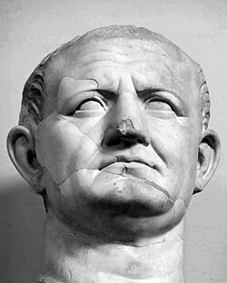
🔎 Lat. Caesar [k] a été emprunté très tôt par le germanique : allemand Kaiser garde le [k], alors que l’italien Cesare a [tʃ].
🔎 Lat. centum : sarde (logoudorien) kentu n’a pas palatalisé.
6.6.4 1er s. ap. J.-C.
Quel changement ?
A
- montānea > montagne
- cōnsiliārī > conseillier (français moderne conseiller)
- °glacia > glace
B
- insignia > enseigne
- alliu > ail
- Francia > France
A : / V ___ V
B : / {#, C} ___
Assimilation nj, lj, kj > ɲɲ, ʎʎ, tts
- nj, lj, kj → ɲɲ, ʎʎ, tts / V ___ V
- nj, lj, kj → ɲ, ʎ, ts / {#, C} ___
6.6.5 latin tardif 1er s.
Quel changement ?
A
- cantiōne > °canʦjōne > chançon, ⟨ç⟩ = [ʦ] (français moderne chanson)
B
- ratiōne > raison, ⟨s⟩ = [ʣ]
A : / C ___
B : / V ___ V
Assibilation tj > tsj
- tj → [ʦ] / C ___
- tj → [ʣ] / V ___ V
6.6.6 latin tardif
Quel changement ?
- vet(u)lu > °veclu > vieil
- sit(u)la > °sicla > seille
- vetustu > vétuste 🚨
Vélarisation t.l > k.l
- tl, dl → [kl, gl]
- 🔎 L’Appendix Probi (liste de « fautes » datée entre le 3e et le 5e s. selon les auteurs) corrige : vetulus non veclus, masculus non masclus, calida non calda. Les « fautes » montrent la prononciation réelle.
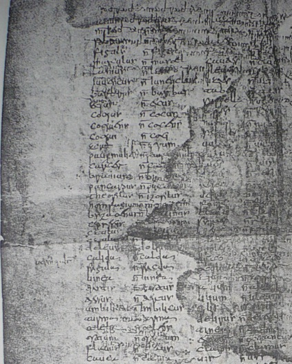
6.6.7 latin tardif – ancien français
Quel changement ?
A
- tem(p)tāre > tenter
- san(c)ta > sainte
- hos(pi)tāle > (h)ostel > hôtel
- gal(bi)nu > jalne > jaune
- man(dū)cāre > mangier > manger
- comp(u)tāre > conter (français moderne compter)
- ser(v)iente > sergent
B
- comprēnd(e)re > comprendre
- umbra > ombre
- rump(e)re > rompre
- alt(e)ru > altre > autre
- ung(u)la > ongle
A : / C ___ C
B : C + CC de sonorité croissante (muta cum liquida ; obstruente + liquide/glide)
CCC : syncope de la C médiane
- C → ∅ / C ___ C (consonne médiane éliminée : CCC → C₁C₃)
- mais C.TR → maintenu
6.6.8 latin tardif 2e s.
Quel changement ?
A
- paria > paire
- coriu > cuir
- feria > foire
- repatriāre > repairier > repairer
- bāsiāre > baisier > baiser
- ma(n)siōne > maison
B
- cantiōne > chançon > chanson
- °captiāre > chacier > chasser
- °matteūca > maçue > massue
- °plattea > place
- °fortiāre > forcier > forcer
- °altiāre > haucier > hausser
- °tractiāre > tracier > tracer
- burriōne > borjon > bourgeon
A : / V ___ V
B : / C ___
Métathèse
- C.j → j.C / V ___ V (C = r, s, ʦ ; aussi TR avec r)
- C.j → maintenu / C ___ (métathèse bloquée)
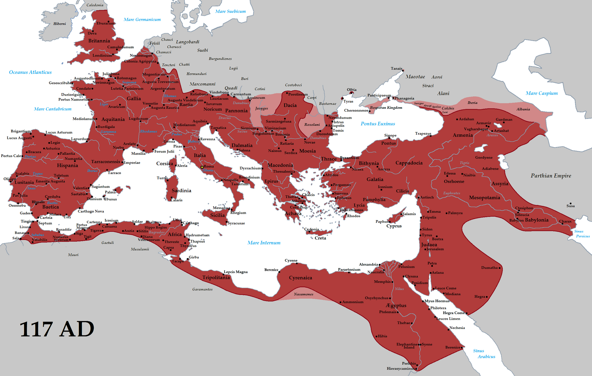
- [ɟ] ne connaît jamais l’affrication (> [ʤ]) : il est réduit à yod dès le latin, bien avant l’affrication (4e-5e s.).
- rēge > °rēɟe > °rējje > °rej > rei : le ē est entravé par le yod géminé dès le latin, il ne participe donc pas à la diphtongaison française du 6e s. ; ei > oi est ici une diphtongue de coalescence (e entravé + yod issu de la vélaire).
- Autre analyse : si [jj] se dégémine tôt, avant le 6e s., rei peut venir de la diphtongaison française (rēje > °reje > reije > rei).
6.6.9 latin tardif 2e-4e s.
Quel changement ?
A
- hodiē > hui (français moderne aujourd’hui)
- gaudia > joie
- medianu > moiien > moyen
- regiōne > roion (français moderne région)
- exagiu > essai
- corrigia > correie > courroie
B
- diurnu > jorn > jour
- Georgiu > Jorges > Georges
- hordeu > orge
- vir(i)diāriu > vergier > verger
- chīrurgia > cirurgie > chirurgie
A : / V ___ V
B : / {#, C} ___
Palatalisation (et affrication) dj, gj > ɟ
- dj, gj → [ɟ] → [jj] / V ___ V
- dj, gj → [ɟ] → [ʤ] / {#, C} ___

6.6.10 3e-4e s. (1/2)
Quel changement ?
Paroxytons
- pede > pié > pied
- feru > fier
- heri > ier > hier
- petra > piere > pierre
- febre > fievre > fièvre
- cęlu > ciel
- breve > brief > bref
- mel > miel
- lętu > liet, lié > lie « joyeux » (cf. chère lie)
- lęt(u)s (Nsg) > liez
Proparoxytons
- lepore > lievre > lièvre
- eb(u)lu > hieble > hièble
- tep(i)du > tiede > tiède
- *sedicu > siege > siège
- medicu > miege « médecin »
ɛ (< latin classiqueĕ) / tonique, syllabe ouverte
Diphtongaison romane : ɛ > ie, ɔ > uɔ
- ɛ (< latin classiqueĕ) → [iɛ] / tonique, syllabe ouverte
- Proparoxytons, si la diphtongaison précède la syncope de la posttonique (lièvre, hièble, tiède)
- Proparoxytons, si la diphtongaison précède -Cicu → -Cju → -[ʤə]
- 🔎 Le portugais n’a pas diphtongué : lat. pede, novu > port. pé, novo (esp. pie, nuevo ; italien piede, nuovo).
6.6.11 3e-4e s. (2/2)
Quel changement ?
Paroxytons
- cor > cuer > cœur
- bove > buef > bœuf
- novu > nuef > neuf (adj.)
- proba > prueve > preuve
- novem > nuef > neuf (num.)
- *pot(e)t (3s) > puet > (il) peut
- movet > muet > (il) meut
- mola > muele > meule
Proparoxytons
- op(e)ra > uevre > œuvre
ɔ (< latin classiqueŏ) / tonique, syllabe ouverte
Diphtongaison romane : ɛ > ie, ɔ > uɔ
- ɔ (< latin classiqueŏ) → [uɔ] / tonique, syllabe ouverte
- Diphtongaison spontanée ; avec celle, un peu antérieure, de ɛ (< latin classiqueĕ) → [iɛ] ↗160, elle constitue la diphtongaison romane
- Graphie normale en ancien français : ⟨ue⟩
- Proparoxytons, si la diphtongaison précède la syncope de la posttonique (œuvre)
6.6.12 3e s.
Quel changement ?
A
- fac(e)re > faire
- *plac(e)re > plaire
- *coc(e)re > cuire
B
- crēsc(e)re > creistre > croître
- carc(e)re > chartre
- vinc(e)re > veintre > vaincre
A : / V ___ V
B : / C. ___ (devant r)
Dépalatalisation devant r : [c,ɟ]+r > j+t,d
- k,g + (i,e) → [c,ɟ] (palatalisation) → [j] + [t,d] (dépalatalisation) / C. ___ r
- k,g + (i,e) → [j] / V ___ V
- k,g + (i,e) → [j] + [t] / C. ___
- L’occlusive palatale [c] devient l’occlusive dentale [t] (devant une consonne autre que r) pas de dépalatalisation : [j] + [ʦ], comme attendu
- grac(i)le > graisle (⟨s⟩ = [ʦ] > [s]) > grêle
- k,g + (i,e) suivi de la syncope : évolution particulière
- Aboutissement attendu : j + [ʣ], comme dans placēre > plaisir
- Mais fac(e)re > faire : on retrouve l’élément palatal (⟨i⟩), mais aucun représentant de la vélaire
- L’évolution semble donc être k,g + (i,e) → [j]… mais c’est un leurre
6.6.13 4e s.
Quel changement ?
- centu > *[c]entu > *[ʧ]entu > cent ⟨c⟩ = [ʦ]
- gente > *[ɟ]ente > *[ʤ]ente > gent ⟨g⟩ = [ʤ]
Affrication [c,ɟ] > tʃ,dʒ
- [c,ɟ] (palatalisation) → [ʧ,ʤ] (affrication spontanée)
- La palatalisation romane se décompose en deux processus indépendants et successifs
6.6.14 3e-4e s.
Quels changements ? (deux étapes)
| étape 1 | étape 2 | |
|---|---|---|
| p, t, k | [b, d, g] | [β] (> [v]), [ð], [ɣ] |
| b, d, g | – | [β] (> [v]), [ð], [ɣ] |
| f, s | [v, z] | – |
/ V ___ V (trajectoire de lénition des obstruantes)
Voisement et spirantisation intervocaliques
- Voisement : p, t, k → [b, d, g] ; f, s → [v, z] / V ___ V
- Spirantisation : b, d, g → [β] (> [v]), [ð], [ɣ] / V ___ V
6.6.15 3e-4e s.
Quel changement ?
- caballu > °kævællo > °ʧævællo
Antériorisation a > æ
- a → [æ] (toute position), palatalise k, g précédents
- Datation : [æ] au 5e s.
6.6.16 3e-5e s.
Quel changement ?
- sacrāmentu > sairement > serment
- oc(u)lu > ueil > œil
/ ___ {r, l}
Vélaires en coda : léntion à yod
- k, g → [j] / ___ {r, l}
6.6.17 3e-6e s. (1/2)
Quel changement ?
A
- caballu > cheval
B
- pavōre > peeur > peur
- matūru > meür > mûr
A : / Cpalatale ___ (atone initiale)
B : / atone initiale, en hiatus
Centralisation des voyelles atones en schwa ancien ə¹, puis syncope des voyelles centralisées
- a → maintenu / atone
- a → [e] → [ə] / Cpalatale ___ (atone initiale)
- a → [e] → [ə] / atone initiale, en hiatus
6.6.18 3e-6e s. (2/2)
Quel changement ? Où le schwa se maintient-il ?
A
- °quadrifurcu > carrefor > carrefour
- nūtrīmentu > norrement (‘nourriture’)
- petrosīliu > perresil > persil
- latrōciniu > larrecin > larcin
- paup(e)re > povre > pauvre
- mātre > mere > mère
- crēd(e)re > croire
- patre > pere > père
- frātre > frere > frère
- templu > temple
B
- meli(o)r > mieldre
- seni(o)r > sire
- pip(e)r > poivre
- insim(u)l > ensamble > ensemble
C
- rubeu > rouge
- sapidu > sage
- rīki (frk.) > riche
- sīmiu > singe
D
- carp(i)nu > charme
- hosp(i)te > oste > hôte
- galb(i)nu > jalne > jaune
- °und(e)ce > onze
E
- com(i)te > conte > comte
- as(i)nu > asne > âne
- tep(i)du > tiede > tiède
- alnu > aune > aulne
Centralisation des voyelles atones en schwa ancien ə¹, puis syncope des voyelles centralisées
- A : [ə1] → maintenu / TR ___
- B : ∅ → [ə] / TR ___ # (schwa épenthétique)
- C : [ə1] → maintenu / {ʧ, ʤ} ___ #
- D : [ə1] → maintenu / CCC ___ #
- E : [ə1] → maintenu / C.C ___ # (groupe absent en latin)
6.6.19 4e-5e s.
Quel changement ?
- centu > °cjentu > °ʧentu > °ʦentu > cent
- placēre > °plaʧir > °plajʦir > plaisir
(toute position)
Dépalatalisation générale tʃ > j+ts
- [ʧ] → [jʦ] (toute position, dépalatalisation générale)
6.6.20 5e s.
Quel changement ?
- cane > chien
- causa > chose
- cantāre > chanter
- arca > arche
- coll(o)cāre > couchier > coucher
- caball(i)cāre > chevauchier > chevaucher
- gamba > jambe
- galb(i)nu > jalne > jaune
- virga > verge
- pūrgāre > purgier > purger
/ {#, C} ___
Palatalisation gallo-romane
- k, g → [ʧ, ʤ] / {#, C} ___ i, e, a, au
- 🔎 Le picard et le normand n’ont pas cette palatalisation : picard cat (français chat).
- 🔎 L’anglais a emprunté au normand : catch / français chasser, cattle / français cheptel.
6.6.21 5e s.
Quel changement ?
A
- °tabōne > taon
- dēforis > deors > dehors
- pavōre > peor > peur
- °nūba > nue
- ovic(u)la > oeille > ouaille
B
- nov(u) > nuef > neuf
- lav(ō) > lef (français moderne (je) lave)
- nap(u) > nef (‘navet’)
C
- focu > feu
- jocu > jeu
- a(u)gustu > aost > août
- sēcūru > seür > sûr
- legūme > leün > légume
- cicōnia > ceoigne > cigogne
- fragōre > freor > frayeur
- leuca > lieue
- rūga > rue
- locāre > loër > louer
- doga > doue > douve
A : / ___ {u, o} ou {u, o} ___
B : / V ___ (V)#
C : / V ___ V, adjacent à u, o
Labiales et vélaires amuïes par un u,o adjacent
- labiale → ∅ / ___ {u, o} ou {u, o} ___
- labiale → [f] / V ___ (V)# (exceptions)
- k, g → ∅ / V ___ V, adjacent à u, o
6.6.22 6e s.
Quel changement ?
- causa > chose
(toute position)
Monophtongaison au > ɔ
- [au] → [æu] → [au] → [ɔ] (toute position)
- 🔎 L’Appendix Probi :
- Auris non oricla
- Faenisecia non fenisecia
6.6.23 6e s.
Quel changement ?
- [e, o, æ] → [ei, ou, æɛ] / tonique, syllabe ouverte
Diphtongaison française : e > ei, o > ou, a > æɛ
6.6.24 6e s.
Quel changement ?
- cāru > chier
- cadit > chiet
- °capu > chief
- commeātu > congié
- coll(o)cāre > couchier
- necāre > noiier
- °wadanjāre > gaaignier
- cōnsiliārī > conseillier
- °lakeāre > lacier
- °captiāre > chacier
- calceāre > chaucier
- adj(ū)tāre > aidier
- cōgitāre > cuidier
- °satiāre > saisier
- bāsiāre > baisier
- °bassiāre > baissier
- °impast(o)riāre > empaistrier
- frāgrāre > flairier
/ Cpalatale ___ (tonique, syllabe ouverte)
Effet Bartsch-Mussafia sur le a,e et le i,e toniques libres
- [æɛ] → [iɛ] / Cpalatale ___ (tonique, syllabe ouverte)
6.6.25 6e-8e s.
Quel changement ?
- caballu > cheval
- caballicāre > chevauchier > chevaucher
- capillōs > cheveus > cheveux
- cadēre > cheoir > choir
- °camīnu > chemin
- canīcula > chenille
- °garofilu > gerofle > girofle
- galīna > geline > géline
/ {ʧ, ʤ} ___ (atone initiale, syllabe ouverte)
a > e initial après consonne palatale
- a → [e] → [ə2] / {ʧ, ʤ} ___ (atone initiale, syllabe ouverte)
6.6.26 6e-8e s.
Quel changement ?
- [u] → [y] (toute position)
Changement non conditionné : u > y
- 🔎 L’italien et l’espagnol n’ont pas [y] : italien muro, esp. muro sauf dans la vallée d’Aoste
6.6.27 7e s. : Centralisation de a atone (sauf à l’initiale) en schwa tardif ə²
6.6.28 7e-8e s.
Quel changement ?
- capillōs > cheveus > cheveux
- peccātum > pechié > péché
- posseo > puis
- stēlla > estoille > étoile
- gutta > gote > goutte
- cippu > cep
- cappa > chape
- rot(u)lu > rolle > rôle
- quadrātu > carré
- adportāre > aporter
/ V ___ V
Dégémination
- C₁C₁ → C / V ___ V (dégémination)
- Datation : rr à partir du 12e s.
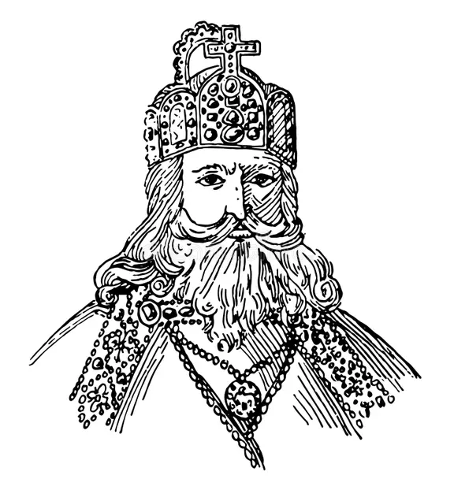
- 🔎 La graphie garde les doubles consonnes (belle, terre) ; l’italien les prononce encore (bella, terra).
6.6.29 7e-9e s.
Quel changement ?
- rupta > route
- °captiāre > chacier > chasser
- tep(i)du > tiede > tiède
- sap(i)t > sait
- obstāre > oster > ôter
- subtus > soz > sous
- cub(i)tu > coude
- dub(i)tāre > doter > douter
- cīv(i)tāte > cité
- nāv(i)gāre > nagier > nager
/ en coda
Élimination des labiales en coda
- p, b, v → ∅ / en coda
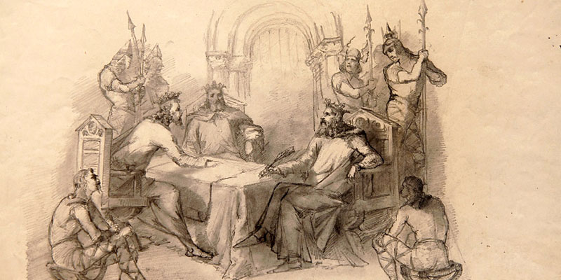
6.6.30 8e-9e s. : Vocalisation de yod en coda
6.6.31 10e-11e s.
Quel changement ?
- cantāre > chanter [ʃãnter]
- lūna > lune [lỹnə]
- °camīn(u) > chemin [ʃəmĩn]
- fem(i)na > feme [fãmə] (français moderne femme)
/ ___ N
Nasalisation des voyelles devant consonne nasale
- V → Ṽ / ___ N
6.6.32 9e-11e s.
Quel changement ?
- vīta > vide > vie
- spatha > espede > espee (français moderne épée)
- potēre > pooir > pouvoir
- grātu > gré
- audīre > audir > oïr > ouïr
- laudāre > lauder > loër > louer
- vidēre > veoir > voir
- cadēre > cheoir > choir
- pede > pié (français moderne pied)
/ V ___ V
Chute de ð (< t,d) intervocalique et final
- t, d → [ð] → ∅ / V ___ V
- Datation : [ð] dès le 3e–4e s.
- 🔎 Les Serments de Strasbourg (842) notent ce son ‹dh› : aiudha, cadhuna (« aide », « chacune »).
6.6.33 11e s.
Quel changement ?
- [e] → [ə] / # ___
Centralisation de e initial en schwa tardif ə
6.6.34 11e s.
Quel changement ?
A
- dulcia > douce
- alba > aube
- val(e)t > valt > vaut
- coll(o)cāre > colchier > couchier > coucher
- °foll(ō)s > fols > fous
B
- fīl(iu)s > fils > fis (français moderne fils)
- pūl(i)ce > pulce > puce
- pīl(ō)s > peis (français moderne poils)
- hos(pi)tāl(ē)s > ostes > hôtes
- °vol(e)t > vuelt > veut
A : / en coda
B : / en coda, après voyelle antérieure
Vocalisation de l en coda
- l → [ɫ] → [w] / en coda (diphtongue de coalescence)
- l → [w] → ∅ / en coda, après voyelle antérieure
- 🔎 cheval / chevaux : chevals > chevaus. Le ‹x› final serait une abréviation de copiste pour -us, réinterprétée ensuite.
6.6.35 11e s.
Quel changement ?
- hīsp(i)dōsu > hisdos > hideux (angl. hideous)
- exgrumāre > esgruner (français moderne égrener)
- masc(u)lu > masle > mâle (angl. male)
- vass(e)llittu > vaslet > valet (angl. valet)
- disj(u)nāre > disner > dîner (angl. dine)
- blast(e)māre > blasmer > blâmer (angl. blame)
/ ___ {D, R}
Chute de s en coda devant consonne voisée
- [z] → ∅ / ___ {D, R}
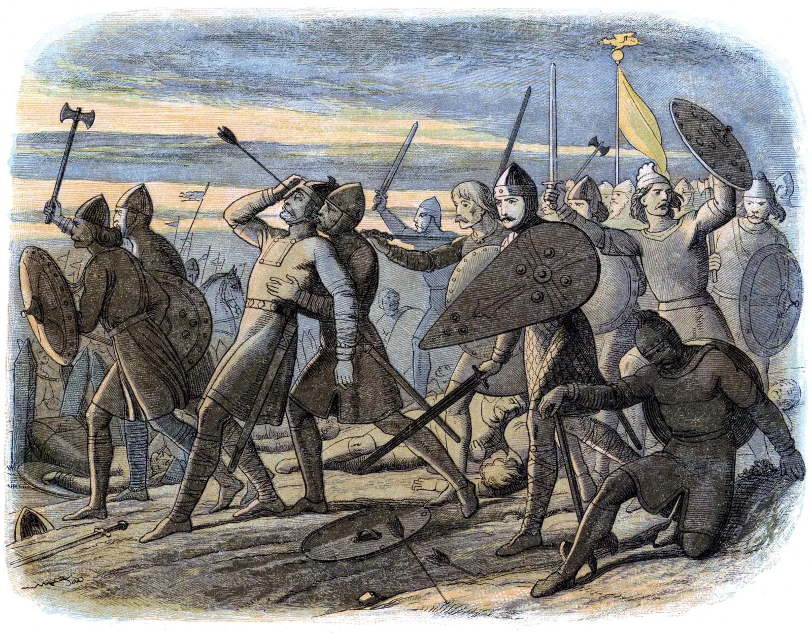
6.6.36 12e s.
Quel changement ?
- sage : large, cors : enclos (Philippe de Thaon, Bestiaire, 1121–1135)
- braz : pars, lais : travers (Roman de Troie, 2e moitié du 12e s.)
- ars : pas, fors : clos (Béroul, Tristan, fin du 12e s.)
/ en coda (attesté par les rimes)
Début de la perte de r en coda
- r → ∅ / en coda (attesté par les rimes)
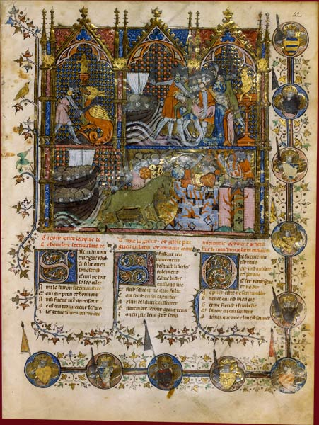
6.6.37 Fin 12e s.
Quel changement ?
- C finale → ∅ / ___ # C
Début de la liaison
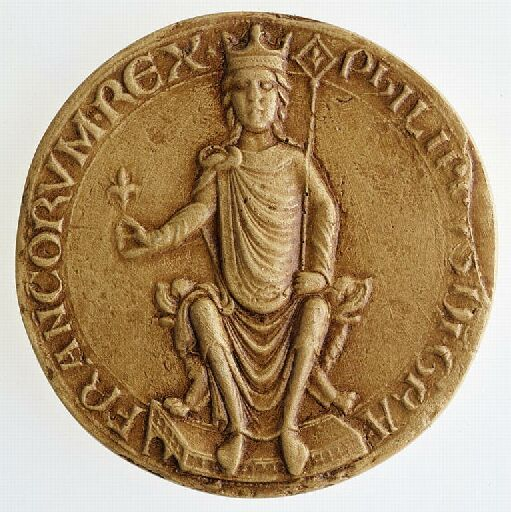
6.6.38 12e-16e s.
Quel changement ?
- voyelles moyennes → [e, o, ø] / syllabe ouverte
- voyelles moyennes → [ɛ, ɔ, œ] / syllabe fermée
Loi de position
- Datation :
- [e]/[ɛ] : dès le 12e s.
- [o]/[ɔ], [ø]/[œ] : 15e–16e s.
6.6.39 13e s.
Quel changement ?
- foreste > forest > forêt (angl. forest)
- hosp(i)te > oste > hôte (angl. host)
- castellu > chastel > château (angl. castle)
- hos(pi)tāle > (h)ostel > hôtel (angl. hostel)
- besta > beste > bête (angl. beast)
- testa > teste > tête
- tes(ti)mōniu > tesmoin > témoin
/ ___ T
Chute de s en coda devant consonne sourde
- [s] → ∅ / ___ T
6.6.40 13e s.
Quel changement ?
A
- petra > pierre
- pede > pié (français moderne pied)
B
- vidēre > veoir > voir
- crēta > craie
Monophtongaisons
- A : [iɛ] → [jɛ] ou [je]
- B : [ue] → [wa] (parfois [ɛ])
6.6.41 13e s.
Quel changement ?
- [ʦ] → [s] : centu > cent [ʦ] > [s]
- [ʣ] → [z] : placēre > plaisir [ʣ] > [z]
- [ʧ] → [ʃ] : cantāre > chanter [ʧ] > [ʃ]
- [ʤ] → [ʒ] : diurnu > jorn [ʤ] > jour [ʒ]
Désaffrication : ts > s, dz > z, tʃ > ʃ, dʒ > ʒ
- Affriquées → fricatives simples (perte de l’élément occlusif)
- C’est la modification la plus notable de l’inventaire consonantique depuis l’afr
- 🔎 L’anglais a emprunté avant : chief, change, judge, journey gardent [tʃ] et [dʒ] (français chef, changer, juge, journée).
6.6.42 Fin 13e s.
Quel changement ?
- pede > pié > [pje] > pied
- vitru > vuerre > [vwerrə] > verre
Les deux seules diphtongues ouvrantes iɛ et ue (Rq1)
Consonification ie, ue > je, we
- Les deux seules diphtongues ouvrantes iɛ et ue consonifient leur premier élément (Rq1)
- (latin classiqueĕ >) iɛ → [jɛ]
- (latin classiqueĭ, ē > ei > oi > oe >) ue → [we]
6.6.43 13e-17e s.
Quel changement ? Deux résultats.
A
- fide > fei > fue > foi
- nigru > neir > nuer > noir
- vid(e)t (3s) > veit > vuet > voit
- *sapēre > saveir > savuer > savoir
- sēru > seir > suer > soir
- crēdere > creire > cruere > croire
- lēge > lei > lue > loi
- rēge > rei > rue > roi
- frig(i)du > freit > fruet > froid
- dīrectu > dreit > druet > droit
B
- discu > dois > dwes > dais
- *cognosc(e)re > conoistre > conwestre > connaître
- *mariscu (frk) > marois > marwes > marais
- rig(i)da > roide > rwede > raide
- vitru > voire > vwere > verre
- tonitru > tonoire > tonwere > tonnerre
- *friscu > frois > frwes > frais
- crēta > croie > crwee > craie
- clēta > cloie > clwee > claie
- glis- (celt) > gloise > glwese > glaise
we > ɛ, évolution combattue par la norme qui cherche à maintenir ou restaurer we
- A : ue → [we] → [wa] (⟨oi⟩)
- B : ue → [e] → [ɛ] (⟨e⟩, ⟨ai⟩)
- 🔎 François (prénom) et français (adjectif) sont le même mot : la prononciation [ɛ] a gagné dans l’adjectif.
6.6.44 13e-17e s.
Quel changement ?
- br : brevi > brief > bref
- tr : *treuwa (frk) > trieve > treve > trêve
- kr : *crem(e)re > criembre > crembre > craindre
- kr : crepō (1s) > crieve > creve > (je) crève
- gr : *greve > grief > gref > grief
/ TR ___
Élimination de yod après consonne palatale
- yod → ø / TR ___ : attaque branchante triple impossible, *TRj (condition syllabique)
6.6.45 13e-17e s.
Quel changement ?
- (nasale en coda) cantāre > chanter [ʃɑ̃nter]
- (nasale intervocalique) lūna > lune [lỹnə]
- (nasale finale) *camīn(u) > chemin [ʃəmĩn]
- fem(i)na > feme [fɑ̃mə] > femme [fam]
Abaissement des voyelles nasales hautes ĩ, ỹ, ũ > ɛ̃, œ̃, ɔ̃
- voyelle → voyelle nasale / ___ N (nasalisation par la consonne nasale suivante)
- La nasalisation devant nasale intervocalique est documentée par l’abaissement e > a de la voyelle tonique : fem(i)na > feme [fɑ̃mə] > femme [fam]
6.6.46 Fin 12e-17e s.
Quel changement ?
A
- *vērācu > verai > vrai
B
- *dōnār-at (3s fut) > donera > donra > donnera
- alabastru > alebastre > aubastre > albâtre
- *dēnārāta > deneree > denree > denrée
A : / syllabe initiale
B : / syllabe prétonique
La prononciation de schwa en syllabe ouverte devient optionnelle (état du français moderne)
- ə2 (schwa tardif) → ø / syllabe ouverte, dans des mots d’abord attestés avec schwa en ancien français (contrairement à ceux de la Rq1)
- 🔎 Dans le Midi, le schwa final se prononce encore souvent : table [ˈtablə].
6.6.47 14e-17e s.
Quel changement ?
A
- vidēre > veoir > voir
- cadēre > cheoir > choir
- sēcūru > seür > sûr
- pēduculu > peouil > pou
B
- laudat (3s) > loue [luə] > loue [lu]
- nūda > nue [nyə] > nue [ny]
- nata > nee > née [ne]
C
- *catalectu > chaelit > châlit
- Catalaunis > Chaelons > Châlons
A : / ___ V
B et C : / V ___
Élimination du schwa en hiatus
- A : ə → ø / ___ voyelle tonique
- B : ə → ø / voyelle tonique ___
- C : ə → ø / voyelle atone ___
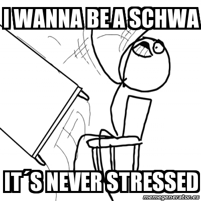
6.6.48 15e s.
Quel changement ?
- lūna > lune [lỹnə] (afr) > [lynə] > lune [lyn]
- femme > [fam]
/ ___ N V
Dénasalisation des voyelles nasales intervocaliques
- voyelle nasale → voyelle orale / ___ N V (dénasalisation)
- À partir de la fin du 15e s. (dès le 13e s. selon certains auteurs) ; processus achevé seulement vers la fin du 17e s.
- Chez Molière (Les Femmes savantes), la nasale est déjà archaïque :
- La vieille Bélise prononce encore grammaire [grɑ̃mɛr], et la jeune Martine comprend grand’mère [grɑ̃mɛr]
- Bélise : « Veux-tu toute ta vie offenser la grammaire ? »
- Martine : « Qui parle d’offenser grand’mère ni grand-père ? »
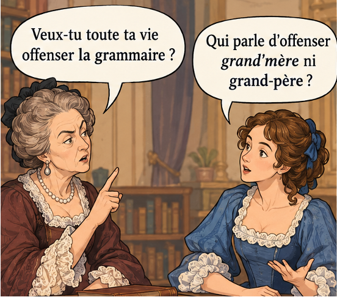
6.6.49 À partir de la fin du 15e s.
Quel changement ?
| \(\_\_\#C\) | \(\_\_\#V\) | \(\_\_\#\#\) | |
|---|---|---|---|
| 11e s. | [-t] peti[t] canon | [-t] peti[t] enfant | [-t] il est peti[t] |
| fin 12e s. | ø peti canon | [-d] peti[d] enfant | [-t] il est peti[t] |
| fin 15e s. | ø peti canon | [-t] peti[t] enfant | ø il est peti |
| français moderne (dix, six) | ø di canons | [-z] di[z] enfants | [-s] il y en a di[s] |
La consonne finale de domaine C# devient coda et chute
- consonne finale de domaine → coda → ø / ___ ## (devant pause)
- Jusque-là, les consonnes finales de domaine se comportaient comme des intervocaliques
- Elles deviennent des codas, et sous l’action de ce nouveau statut syllabique, elles tombent aussi devant pause
- La représentation lexicale de -s ne change qu’à ce moment
6.6.50 16e s.
Quel changement ?
- chemin [ʃəmĩn] (afr) > [ʃəmɛ̃n] (abaissement) > [ʃəmɛ̃] (perte de la consonne nasale)
- Dans des variétés méridionales modernes, ces consonnes nasales s’entendent encore :
- monde [mɔndə], bon [bɔŋ]
/ Ṽ ___ {#, C}
Chute des consonnes nasales en coda
- consonne nasale → ø / Ṽ ___ {#, C}
6.6.51 16e-17e s.
Quel changement ?
- Au 16e s., on prononçait :
- dortoi, mouchoi, tiroi pour dortoir, mouchoir, tiroir
- acheteu, menteu, porteu pour acheteur, menteur, porteur
- plaisi, loisi pour plaisir, loisir
/ ___ #
r final tend à ne plus être prononcé
- -r → ø / ___ #, selon la règle
6.6.52 Fin 17e s.
Quel changement ?
- t[χ]ain, mer[χ]ci
- d[ʁ]ain, me[ʁ]le
- Le r était apical depuis le latin ; il est toujours uvulaire en français moderne
[χ] : / ___ Csourde ou Csourde ___ · [ʁ] : ailleurs
Uvularisation r > ʁ
- r apical (roulé, comme en italien ou en espagnol) → [ʁ] ou [χ] dans toutes les positions (changement non conditionné)
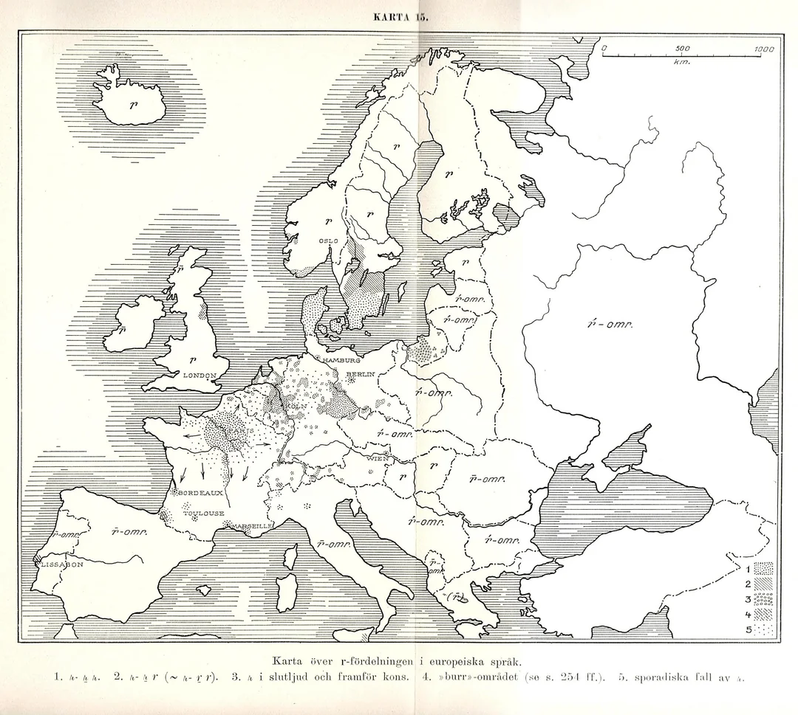
- 🔎 Le [r] roulé reste longtemps vivant à la campagne et dans la chanson : Édith Piaf roule encore ses r dans les années 1930–1950.
6.6.53 17e-19e s.
Quel changement ?
- meliōre > me[ʎ]eur (afr) > me[j]eur (17e s.) > meilleur
ʎ > j
- ʎʎ → [ʎ] (dégémination) ↗238.1
- Le [ʎ] simple se maintient durant l’ancien français et le mfr
- [ʎ] → [j]
- Datation : dégémination aux 7e-8e s. ; [ʎ] → [j] à partir du 17e s. ; l’ancienne prononciation [ʎ] ne disparaît qu’au 19e s.
6.6.54 18e-19e s.
Que s’est-il passé ?
A
- dortoi, mouchoi, tiroi → dortoir, mouchoir, tiroir
- acheteu, menteu, porteu → acheteur, menteur, porteur
- plaisi, loisi → plaisir, loisir
B
- chevalier, dîner, premier, dernier, foyer
- berger, léger, rocher, papier
C
- fer, amer, enfer
B : / {e, ɛ} ___ #
De façon lexicalement erratique, restauration du r final sous l’action de la norme, dans sa nouvelle prononciation uvulaire ʁ
- A : le -r a ensuite été restauré dans ces mots
- B : -r → ø / {e, ɛ} ___ # (reste absent jusqu’à ce jour)
- C : mais -r est prononcé dans le même contexte dans fer, amer, enfer
- La graphie le note toujours, et en registre soutenu il peut être mobilisé en liaison : le premie[ʁ] enfant
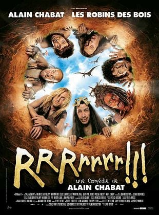
Ie trouve naiſe, la fantaiſie d’aucuns, qui affectent une laſche prononciation du bas populas, d’obmettre & ſupprimer du tout, toutes les r, finales, ainſi Vous plaist-il veni diſn. avec moy, vous me ferez plaiſi, au lieu de dire. Venir, diſner, plaiſir - Maupas 1618 : 11
6.6.55 18e-19e s.
Quel changement ?
- rēge > rei > roi
- cor > cuer > cœur (mfr)
we et wa (écrits <oi>) ayant été en concurrence depuis le 13e siècle, wa s’impose
- ĭ, ē (lc) → [ei] (afr) → [oi] → [oe] → [ue] → [uɛ] → [wa] ↗63
- Datation : [oe] au 12e s. ; [wa] aux 18e-19e s.
- Graphie ⟨oi⟩ depuis le stade [oi], acquis au 12e s., jusqu’en français moderne, quelle que soit la prononciation
- Cette diphtongue ancien français [ue] ⟨oi⟩ (12e s.) est distincte de la diphtongue ⟨ue⟩ issue de latin classiqueŏ ↗62
6.7 Exercice de synthèse
cervu > cerf [s] mais capra > chèvre [ʃ] : pourquoi deux résultats différents pour le même [k] latin ?
Deux palatalisations à deux époques : romane (k + e, i ; 1er–3e s.) → [ts] → [s] ; gallo-romane (k + a ; 5e s.) → [tʃ] → [ʃ]. Les deux affriquées perdent leur occlusion au 13e s. (désaffrication).
6.3.7.1 Comment se forment les noms des changements ?
Le nom d’un changement décrit ce que le son devient : on part de la dimension qui change et du niveau atteint.
Quelques noms ne suivent pas les deux modèles : fermeture / ouverture (aperture), diphtongaison / monophtongaison, assibilation (devenir une sifflante), rhotacisme (devenir [r]), lénition, allongement compensatoire. Un son qui ne se prononce plus du tout : amuïssement (voir Suppression d’un son).
6.3.7.1.1 Voyelles : où et comment ?
6.3.7.1.2 Consonnes : lieu et mode d’articulation
6.3.7.1.3 Consonnes : force, voisement et statut
Ajouts et suppressions (prothèse, épenthèse, aphérèse, syncope, apocope…) : voir plus haut. Ces mêmes termes reviennent dans l’histoire du français : vous devrez les retrouver vous-mêmes !